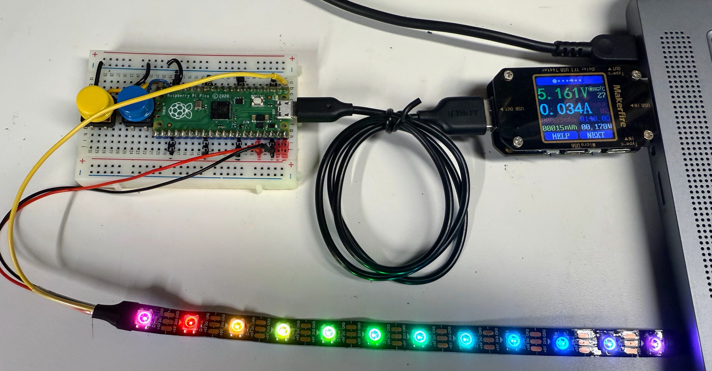

Measuring Power Draw

We can purchase a low cost USB power monitor on e-Bay for under $7.00:
eBay Search for USB Power Meter Voltage Current
Although these meters are no accurate for current under 30 milliamps, they are very low cost and easy to use.
Just place the USB Power Meter between your USB port and the device under test. Many of these meters show the voltage input (which should be about 5 volts) and the current passing through.
Calculating Power from Current
Calculating USB Power Consumption
Basic Formula
Power consumption from a USB port is calculated using the fundamental electrical equation: Power (Watts) = Voltage (Volts) × Current (Amperes)
Standard USB Voltage
USB ports provide a standardized 5 volts (though this may drop slightly under heavy load to around 4.5-4.8V). Simple Calculation
For a standard 5V USB port:
Power (W) = 5V × Current (A)
Practical Examples:
- Device drawing 0.1A (100mA): 5V × 0.1A = 0.5 watts
- Device drawing 0.5A (500mA): 5V × 0.5A = 2.5 watts
- Device drawing 0.9A (900mA): 5V × 0.9A = 4.5 watts
USB Power Limits
- USB 2.0: Maximum 500mA (2.5W)
- USB 3.0: Maximum 900mA (4.5W)
- USB-C/PD: Can negotiate higher voltages and currents
Quick Reference
If your USB power meter shows current in milliamps (mA), convert to amps by dividing by 1000, then multiply by 5:
Power (W) = 5 × (Current in mA ÷ 1000)
This calculation is essential when working with microcontrollers like the Raspberry Pi Pico to ensure you stay within USB power specifications and avoid triggering overcurrent protection.
Power Draw Test on an LED Strip
We can check how much power an short LED strip draws by setting the pixels to various colors and then measuring the total current being drawn. In the sample code below we turn all 12 pixels on with different colors at maximum brightness.
In the code below, we fist turn on all the red LEDs, then green and then blue. After that we turn all three on and we can get the maximum current drawn.
In while running the sleep() function mode, the Raspberry Pi Pico draws about 19.07 milliamps.
1 2 3 4 5 6 7 8 9 10 11 12 13 14 15 16 17 18 19 20 21 22 23 24 25 26 27 28 29 30 31 32 33 34 35 36 37 38 39 40 41 42 43 44 45 46 | |